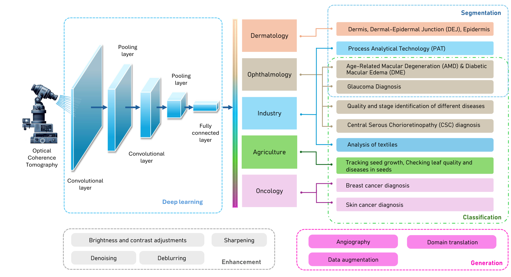

State-of-the-art of deep learning in multidisciplinary optical coherence tomography applications
At a glance
A review of how deep learning supports OCT image analysis across medicine, industry, and agriculture.

Abstract
Optical Coherence Tomography (OCT) emerged as a technology for the detection of retinal disease. Owing to its excellent performance and ability to provide in-vivo high-resolution images, the popularity increased dramatically across various application domains. Consequently, OCT has been widely used in other branches of medical applications, i.e., oncology and otolaryngology, industry, and agriculture. Despite its widespread use, OCT image analysis is an inherently subjective, laborious, and time-intensive task that requires expertise. Deep Learning (DL) stands as the current state-of-the-art method for image analysis. Hence, several research groups have directed their efforts toward incorporating DL algorithms with OCT imaging to reduce the time as well as the subjectivity. This article comprehensively reviews the principal technological advancements in DL methods applied across various OCT applications. Additionally, it explores the latest trends in developing DL methods for OCT, highlights their limitations, and discusses future opportunities in a comprehensive manner.
Approach
The review organizes the literature around classification, segmentation, image generation, and enhancement, comparing datasets, preprocessing steps, and model architectures.
Results & discussion
Research is concentrated in ophthalmology and classification. Wider adoption faces shortages of diverse labeled data, computational demands, privacy concerns, and inconsistent evaluation practices. Transfer learning, data augmentation, and semi-supervised methods offer ways to work with limited training data.
Citation
@article{kalupahana2024octreview,
author = {Kalupahana, D. and Kahatapitiya, N. S. and Kamalathasan, D. and Wijesinghe, R. E. and Silva, B. N. and Wijenayake, U.},
title = {State-of-the-Art of Deep Learning in Multidisciplinary Optical Coherence Tomography Applications},
journal = {IEEE Access},
volume = {12},
pages = {164462--164490},
year = {2024},
doi = {10.1109/ACCESS.2024.3492389}
}Approach and results summarized from the author-uploaded paper. The abstract is reproduced from the paper. Figures reproduced from Kalupahana et al. (2024), © the authors, under CC BY 4.0.